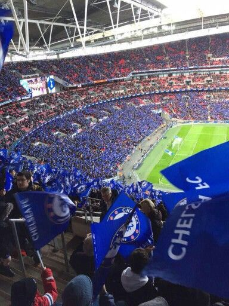
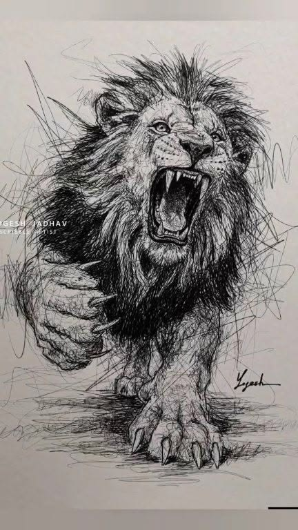
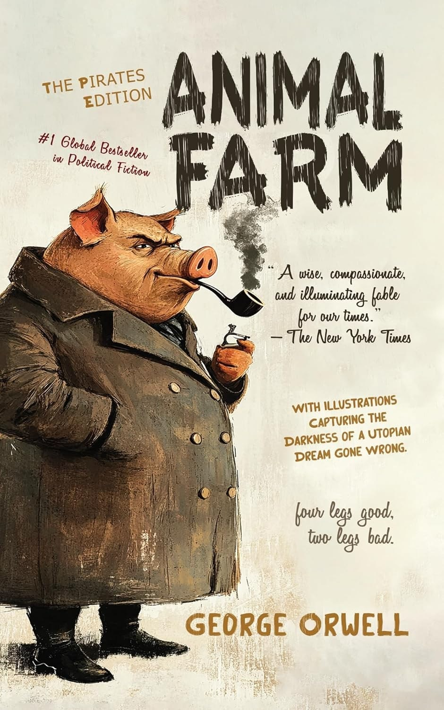
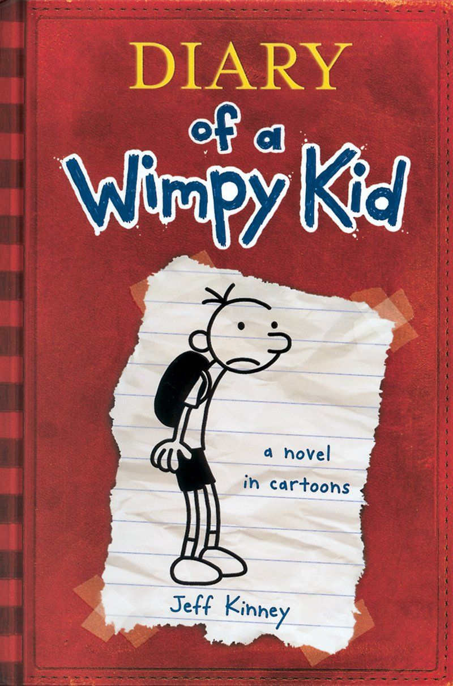
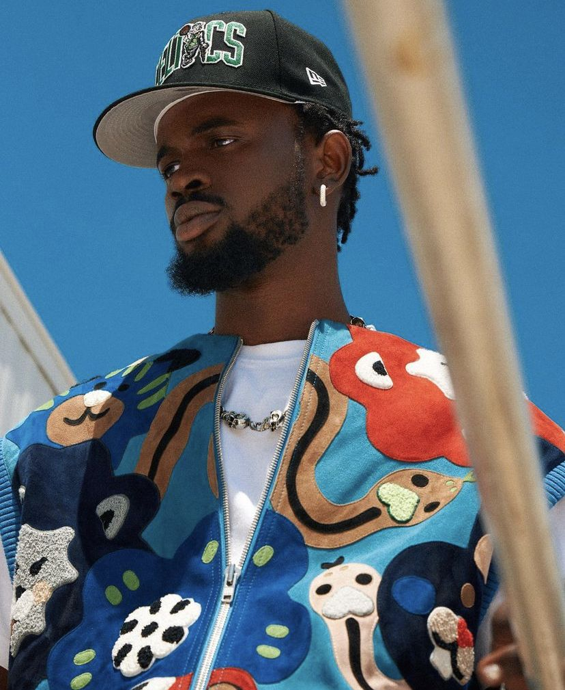
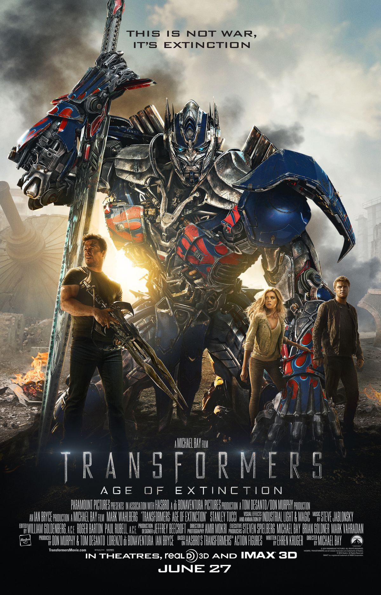

Kemuel Baduon
15 · Mataheko, Tema · JHS 3 Graduate
Loud in class, quiet at home, always dreaming big.
About Me
Hey, I'm Kemuel. I live in Mataheko with my grandparents, my two little sisters Esi and Abena, and our dog called Terror. I just wrote the Basic Examination Certificaate Examination(BECE) and I'm waiting for the results to come out.
I go to church every Sunday, but I like to keep things lowkey. I don't have a huge friend group, but the few friends I have are very dear to me. Most mornings I prefer to wake up late, because I mostly have nothing to do I do my routine chores, and help my grandma out in the kitchen or help my grandpa with his gardening or tending to his car and go straight back to bed.
I am a loud and jovial person, but I tend to become quiet and serious when things get serious or when I am in an unfamiliar place. I like learning new things all the time, especially things that feel useful, and they're mostly related to cars and technology(Computers). In the evenings, when I'm librated from all my chores, you usually find me drawing or practing my coding skills.
This page is all me - the untamed me. Not the perfect me, not the trying too hard please anyone me. Just a boy from Ghana trying to live his life to the fullest.
A Few Things About Me
- Favorite food
- Waakye with a little spaghetti, no debate.
- Favorite sport
- Football - I support Chelsea and I never watch a Black Stars match because I am too young to die of a heart attack.
- What I love doing
- Drawing, coding, and learning new things.
- Favorite book
- Animal Farm - I read it twice. I also love the diary of a Wimpy Kid series.
- Favorite artist
- Black Sheriff - That voice just hits different.
- Favorite movie
- The Transformers Franchise - I watched every movie in the franchise like 5 times in the cinema.
- Dream job
- Engineer - I want to be an engineer who builds useful things that people need I just don't know what kind yet.
- Dream school
- St. Augustine's College - I have and still think of the day when I'll be there.
- Fun fact
- I can name every animal on the planet. Don't test me.







Where I'm Headed
Right now I'm focused on getting good grades in my BECE results and getting into my dream school. I know the journey is not easy - fees, pressure, expectations, and everyone criticizing my every move. But I also know that this is just the beginning. I have a long way to go, and a lot of hard work to do. I don't have all the answers yet, and I don't know exactly what I want to - but I believe in hard work and patience. My late paternal grandma always used to say, "Patience, my child, for a tree does not bear fruit the day it was planted."
One day, I want to look back and reminisce of all I've done and be proud. I wanna have a life story worth telling, a legacy worth leaving, a name worth remembering, for, a business worth building, a company worth leading, a product worth creating, an impact worth making, a mark worth leaving, and finally a life worth living. I want to be remembered as someone who made a difference in the world, someone who lived a good life, someone who was kind and generous, someone who was successful and happy. I want to be remembered as someone who was not afraid to dream big and work hard to achieve those dreams. I want to be remembered as someone who was not afraid to fail and learn from those failures. I want to be remembered as someone who was not afraid to take risks and seize opportunities. I want to be remembered as someone who was not afraid to be different and stand out. I want to be remembered as someone who was not afraid to be himself and live the truth. I want to be remembered as someone who was not afraid to be happy and enjoy life. I want to be remembered as someone who was not afraid to be kind and make the world a better place. I want to be remembered as someone who was not afraid to be great and achieve greatness. I want to be remembered as someone who was not afraid to be immortal and live forever in the hearts of people. I want to be someone my family can be proud of. Good things are coming. For now, I'm taking it one step at a time and trying to enjoy the journey. Wish me luck fellas, I'm gonna need it.